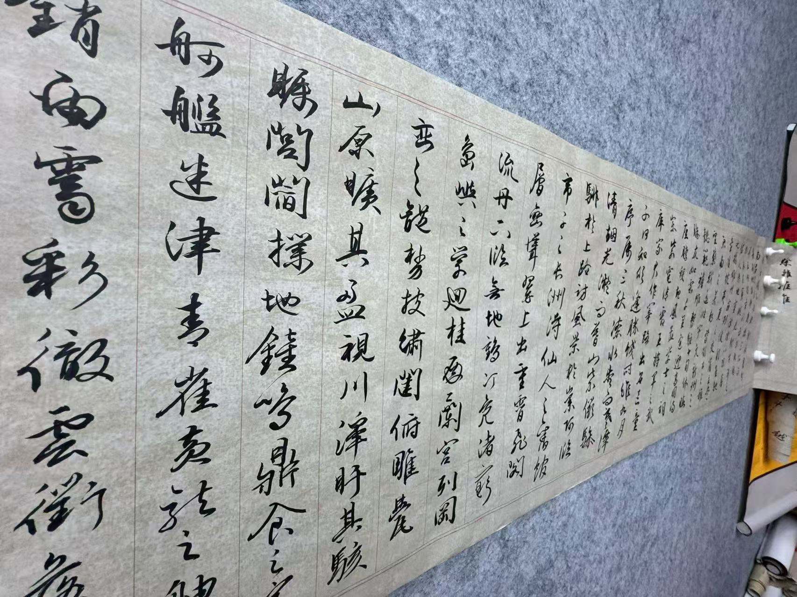

Before pursuing a major in pure literature, I started with data science. Yet, I overestimated my capability to cope with computer programming and rigorous coding. In addition, I thought that since I was already in the world center, learning pure science would just take away all the fun and interaction I could potentially engage with different people. That's how come I develed into literature, a sweet spot where I absorbed global culture, Third World culture specifically and became citizen of the world, as Appiah coined in his book Cosmopolitanism. In the future, I plan to carry my cultivation in art over to the business field.
